Every item and equipment from Risk of Rain and Risk of Rain Returns that Risk of Rain 2 never got, rebuilt to fit RoR2, plus a void version of every item that lacked one. It plugs into the game as its own expansion, next to the official DLCs.
Each one has a painted icon in the game's own style, a 3D pickup model, a spot on every survivor, its own logbook lore, and the game's own sounds and effects. They're balanced against vanilla items of the same rarity.
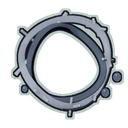
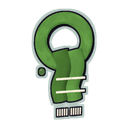
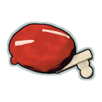
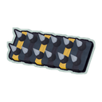
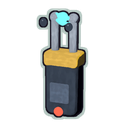
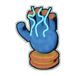
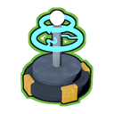
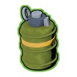
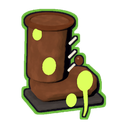
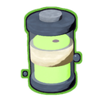
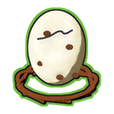
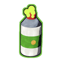
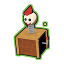
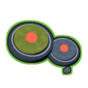
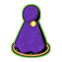
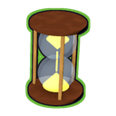
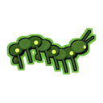
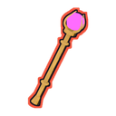
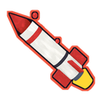
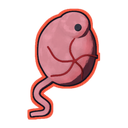
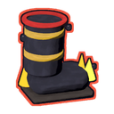
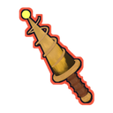
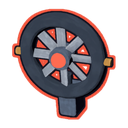
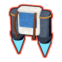
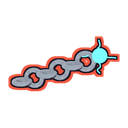
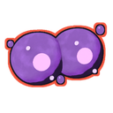
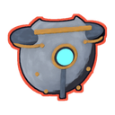
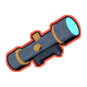
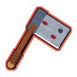
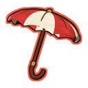
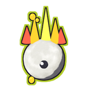
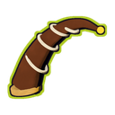
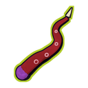
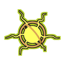
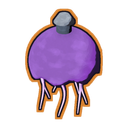
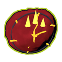
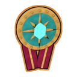
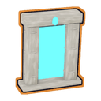
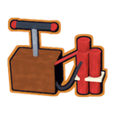
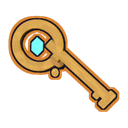
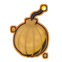
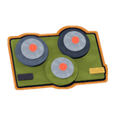
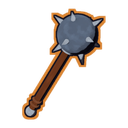
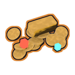
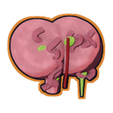
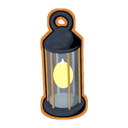
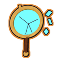
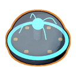
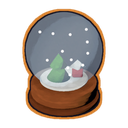
Every white, green and red item that didn't already have a void version now has one, from the base game, all the DLCs and ror2-plus itself. Like vanilla voids, picking one up corrupts its original. Hover an icon to see its name.
Four more artifacts from the original game, adapted for RoR2.
Like in Risk of Rain and Returns, many items have to be earned. Challenges that couldn't carry over to RoR2 were swapped for something in the same spirit. Each one has its own icon in the base game's unlock style. Don't want to grind? Turn off Require Unlocks.
Lunars are harder to get, but their downsides are gentler. Each one keeps its trade-off. Every change has its own switch and number in the config.
| Lunar | Vanilla downside | ror2-plus |
|---|---|---|
| Shaped Glass | -50% max health per stack | -30% per stack (multiplicative) |
| Transcendence | Health set to 1 | Keeps 10% of your health as health |
| Light Flux Pauldron | Attack speed ÷(1 + stacks) | ÷(1 + 0.25 × stacks) |
| Stone Flux Pauldron | Move speed -50% per stack | ÷(1 + 0.33 × stacks), -25% at one stack |
| Purity | +1 unlucky reroll per stack | 50% chance of an unlucky reroll per stack |
| Neutronium Weight | -30% stats, -35 armor | -15% (-5%/stack), -20 armor (-10/stack) |
| Brittle Crown | Lose 100% (+100%) gold scaling | 50% (+25% per stack) |
| Defiant Gouge | Full-strength shrine spawns | 60% strength |
| Corpsebloom | 10% heal cap, halved per stack | 15% cap, shrinks more slowly |
| Egocentrism | Any item converted every 60s | Only white/green items, every 120s |
| Focused Convergence | Zone -50% (halved per stack) | Zone ÷(1 + 0.33 × stacks) |
| Gesture of the Drowned | Always fires | Only fires with an enemy within 60m; never auto-fires Glowing Meteorite, Helfire, Effigy, Recycler, Crowdfunder, Elegy, Vase, Trophy Hunter's Tricorn or Executive Card |
| Visions/Hooks/Strides/Essence of Heresy | Full cooldown added per extra stack | Half a cooldown per extra stack |
| Mercurial Rachis | Enemies get +50% damage | Enemies get +25% (allies still +50%) |
| Longstanding Solitude | Costs +50% per stack | +25% per stack |
| Glowing Meteorite | Full damage to you and allies | 25% damage to your team |
| Helfire Tincture | 5% max health/s self burn | 2.5%/s; enemies burn exactly as before |
| Effigy of Grief | Slows you 50%, -20 armor | Your team is slowed 25% and keeps its armor |
| Spinel Tonic | 20% affliction chance | 10% |
Harder to get, all adjustable and switchable: Lunar Pods cost 2 coins, Bazaar prices go up by half, coins drop less often and pods appear half as often. Optional extras: Bazaar-only lunars, and a trade-in cost of one white or green item.
Settings live in BepInEx/config/com.ASDFboy.ror2plus.cfg, or in the in-game Mod Options menu if you have Risk of Options.
ror2-plus is a real expansion, so it sits in the lobby's Expansions row next to Survivors of the Void and the other DLCs.